Pythagoras, Archimedes, and Euclid
600 - 0 B.C.
|
Index |
Department |
"What you take to be 4 is 10, a perfect triangle and our oath."
Triangular Numbers
One of Pythagoras's major contributions to this topic was his idea of triangular numbers. Triangular numbers are formed by the equation where tn is the nth triangular number:
This formula tells us we can calculate triangular numbers by adding up consecutive numbers. For example, the ninth triangular number is equal to:
Pythagoras's triangular numbers got that name because that is what you can visualize them as. Each one, when arranged started at t1 = 1, the first triangular number, will form a equilateral triangle. The first four triangular numbers would look like the following:
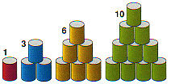
For a more discussion of Triangular numbers visit mathworld.wolfram.com
"Give me a place to stand, and I will move the Earth."
Method of Exhaustion
A major contribution from Archimedes is his method of exhaustion. Archimedes discovered a method of calculating Pi that was used until nineteen centuries later. This method was to inscribe inside and outside a circle a polygon of many sides. The perimeter of the inside polygon would be smaller then p and the outside would be larger then p. His method would look like this: for regular polygons inscribed in a circle of radius 1, using Si where i are the number of sides Archimedes used:
p ~ 48S96 ~ 3.14103 ~ 22/7
See also Archimedes
Algoritam and Archimedes
Recurrence Formula
"There is no royal road to geometry."
Euclid's Algorithm & Continued Fractions
The Euclidean algorithm is an example of a P-problem whose time complexity is bounded by a quadratic function of the length of the input values (Bach and Shallit). Let
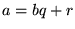
, then find a number u which divides both a and b (so that a = su and b = tu), then u also divides r since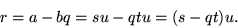 |
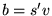
and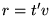
), then v divides a since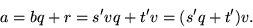 |
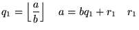 |
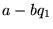 |
||
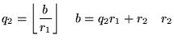 |
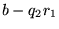 |
||
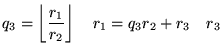 |
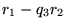 |
||
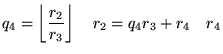 |
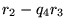 |
||
| ... | |||
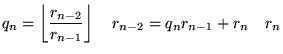 |
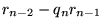 |
||
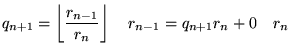 |
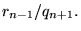 |
For integers, the algorithm terminates when
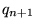
divides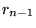
exactly, at which point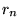
corresponds to the greatest common divisor of a and b,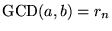
. For real numbers, the algorithm yields eia0 + b1.
a1
+ b2 .
a2 + ...
A continued fraction that has a definite end is a rational number.
An example of this would be:
Suppose you wish to find the greatest common divisor of 123 and 456.
You might proceed as follows:
(1) Divide 456 by 123 to get:
3 + 87 .
123
(2) Now divide the new remainder 87 into the previous divisor 123.
3 + 1 .
1 + 36
87
(3) Dividing these numbers and finding the remainder is Euclid's Algorithm, continue until it ends and it looks like:
3 +
1
.
1 +
1 .
2 +
1 .
2 + 1 .
2 + 1 .
2
Using Euclid's algorithm is very useful for not only finding the gcd
of two numbers, but also for determining continued
fractions.
A continued fraction that goes on in a recursive manner is called an
irrational number. A good example of this would be:
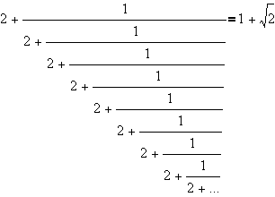
To write this in standard notation use the whole numbers and write them in brackets:
[2; 2; 2; 2; 2; . . .]
To find an approximated value for an irrational continued fraction, choose a part in the fraction and choose to end it there. Then calculate the fraction and that number is your approximation for that continued fraction and irrational number.
For a more in-depth discussion of continued fractions and it's uses
visit Cut-The-Knot.com.